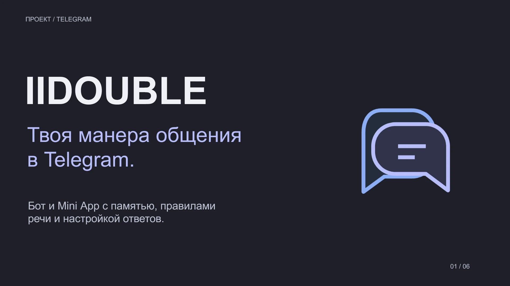

Презентации,
меню и карточки
Разные форматы — от истории продукта на слайдах до меню на одной странице и серии товарных изображений.
Презентация IIDOUBLE
От идеи и возможностей до сценария исправления ответа. Графитовый фон, спокойные акценты и изображения интерфейса в стиле проекта.

Посмотреть все 6 слайдов
Презентация собственного проекта. Интерфейс показан на демонстрационных данных. Текст, изображения и их положение можно менять в PPTX.
Меню кофейни «Пауза»
Одна страница с кофе, завтраками и десертами. Крупные заголовки, ровные колонки цен и тёплая палитра.

Задача
Разместить ассортимент на A4, сохранив читаемость и понятную иерархию.
Решение
Две колонки, единое выравнивание цен и отдельный акцент на сезонном напитке.
Формат
Одностраничный PDF с текстом и изображение для просмотра.
Кофейня вымышлена. Ассортимент, цены и часы работы условные.
Карточки термокружки
Серия из трёх изображений: первое знакомство с товаром, материалы и основные параметры. Один продукт, единая типографика и два цветовых решения.
Концепт для условного товара. Название, характеристики и размеры приведены для демонстрации оформления и не относятся к реальному бренду.
Нужно оформить материалы?
Расскажите о формате, объёме и сроках.